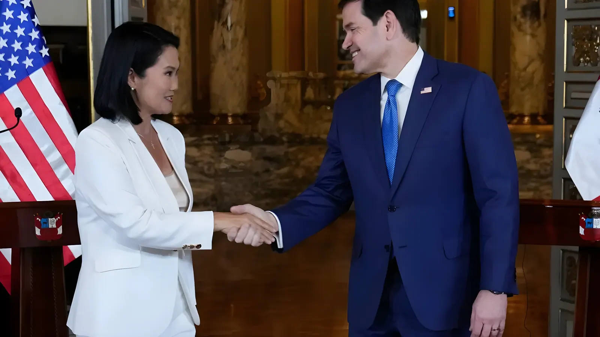

Reçue le 10 septembre 2026 à Lima par le secrétaire d'État américain Marco Rubio, la présidente Keiko Fujimori a confirmé l'adhésion du Pérou à l'« Escudo de las Américas », la coalition sécuritaire multilatérale pilotée par Washington. Le même jour, elle a personnellement demandé à son interlocuteur la révision du tarif douanier additionnel de 12,5 % imposé depuis juillet aux exportations péruviennes — signe que le réchauffement sécuritaire entre les deux pays ne s'accompagne, pour l'instant, d'aucune avancée commerciale équivalente.
Le 10 septembre 2026, le secrétaire d'État américain Marco Rubio a achevé au palais du gouvernement de Lima une tournée qui l'avait mené auparavant en Colombie puis en Équateur. Accueilli par la présidente Keiko Fujimori en présence du chancelier Carlos Espá et de l'ambassadeur américain Bernie Navarro, il s'est entretenu avec elle de sécurité, de lutte contre la criminalité organisée transnationale, du phénomène climatique El Niño, ainsi que des investissements et du commerce bilatéral.
À l'issue de cette rencontre, Fujimori a annoncé que son pays intégrerait l'« Escudo de las Américas », présentant cette adhésion comme une réponse à « la criminalité organisée transnationale et l'insécurité citoyenne ». Rubio a de son côté salué l'arrivée d'un pays qu'il a qualifié d'« allié extra-OTAN majeur », évoquant une « ère nouvelle, une ère dorée » dans la relation bilatérale.
Lancé le 7 mars 2026 lors d'un sommet à Miami, ce dispositif multilatéral piloté par les États-Unis vise à coordonner le partage de renseignement, la coopération militaire et policière, et le contrôle des routes du narcotrafic entre pays participants. Douze pays d'Amérique latine et des Caraïbes — Argentine, Bolivie, Chili, Costa Rica, République dominicaine, Équateur, El Salvador, Guyana, Honduras, Panama, Paraguay et Trinité-et-Tobago — l'avaient rejoint dès l'origine, puis la Colombie ; le Pérou en devient le nouveau membre.
Le mécanisme reste néanmoins de nature politique : aucun traité n'a été signé ni ratifié, l'adhésion prenant la forme d'une déclaration conjointe. Elle s'ajoute à un rapprochement militaire déjà engagé : le Pérou avait été désigné dès décembre 2025 « allié principal non membre de l'OTAN » (Major Non-NATO Ally) par l'administration Trump, statut distinct qui facilite l'achat d'équipements américains, dont les chasseurs F-16 Block 70 récemment acquis par les forces armées péruviennes.
Washington notifie au Congrès son intention de désigner le Pérou « allié principal extra-OTAN » (Major Non-NATO Ally).
Sommet de Miami : Donald Trump lance l'« Escudo de las Américas », rejoint dès l'origine par douze pays d'Amérique latine et des Caraïbes.
Entrée en vigueur d'un tarif douanier additionnel de 12,5 % sur une large part des exportations péruviennes vers les États-Unis.
Marco Rubio entame sa tournée sud-américaine à Bogotá, avant de se rendre en Équateur.
Rubio est reçu à Lima par Keiko Fujimori : annonce de l'adhésion du Pérou à l'« Escudo de las Américas » et demande péruvienne de révision du tarif douanier.
Fujimori détaille les démarches engagées auprès de Washington en vue d'obtenir un réexamen du tarif, avant son déplacement prévu à l'Assemblée générale des Nations unies.
Cette annonce diplomatique intervient alors que les relations commerciales entre les deux pays restent tendues. Depuis le 24 juillet 2026, les exportations péruviennes vers les États-Unis sont frappées d'un tarif additionnel de 12,5 %, décidé par l'administration Trump à l'issue d'une enquête estimant que le Pérou — comme une soixantaine d'autres économies — n'imposait pas ou ne faisait pas appliquer efficacement d'interdiction sur l'importation de biens issus du travail forcé. Cette mesure remplace les droits appliqués depuis février 2026 au titre de la section 122 du droit commercial américain.
Selon l'Association des exportateurs (ADEX), près de 49,7 % des expéditions péruviennes vers le marché américain — environ 5,3 milliards de dollars sur la base des chiffres de 2025 — sont concernées, touchant 2 166 des 2 772 lignes tarifaires exportées par le pays. Certains produits en restent exemptés : aéronefs civils et leurs pièces, produits pharmaceutiques, aluminium, cuivre et dérivés, ainsi que plusieurs fruits comme l'avocat hass.
| Indicateur | Valeur | Contexte |
|---|---|---|
| Tarif appliqué au Pérou | 12,5 % | Depuis le 24/07/2026 |
| Taux général autres partenaires | 10 % | Écart de 2,5 points |
| Exportations péruviennes concernées | ~49,7 % (≈5,3 Md$) | Données ADEX, 2025 |
| Lignes tarifaires touchées | 2 166 / 2 772 | — |
| Accord de libre-échange Pérou–États-Unis | En vigueur depuis 2009 | |
Lors de son entretien avec Rubio, Fujimori a personnellement soulevé la question du tarif, invoquant les conséquences du phénomène El Niño qui frappe le pays cette année, et a demandé un réexamen de la hausse. Selon la présidente, le secrétaire d'État a répondu que le sujet ne relevait pas de sa compétence, mais qu'il le transmettrait au responsable concerné de l'administration américaine. Le ministre péruvien du Commerce extérieur et du Tourisme, Roger Valencia, présent à la réunion, a détaillé l'argumentaire économique du pays.
Fujimori a indiqué que son gouvernement poursuivrait ses démarches, et qu'elle serait accompagnée de Valencia — sous réserve de l'autorisation du Congrès pour ce déplacement — lors de son prochain voyage aux États-Unis à l'occasion de l'Assemblée générale des Nations unies, où une réunion de travail sur le sujet est prévue avec les autorités américaines concernées.
Le contraste est net entre les deux volets de cette visite. Sur le plan sécuritaire et militaire, le rapprochement avance vite et sans réserve : statut d'allié extra-OTAN, adhésion à l'Escudo de las Américas, achats d'armement. Sur le plan commercial, en revanche, Lima ne dispose d'aucune garantie de calendrier : la demande de révision tarifaire a été renvoyée à une administration américaine dont le secrétaire d'État lui-même a reconnu qu'elle n'était pas de son ressort. Le Pérou devra donc mesurer, dans les mois qui viennent, si son statut de partenaire sécuritaire privilégié se traduit par une réelle marge de manœuvre commerciale, ou si les deux dossiers continueront d'avancer à des rythmes disjoints.
Recibida el 10 de septiembre de 2026 en Lima por el secretario de Estado estadounidense Marco Rubio, la presidenta Keiko Fujimori confirmó el ingreso del Perú al «Escudo de las Américas», la coalición de seguridad multilateral liderada por Washington. Ese mismo día, pidió personalmente a su interlocutor la revisión del arancel adicional de 12,5 % impuesto desde julio a las exportaciones peruanas, señal de que el acercamiento en seguridad no viene, por ahora, acompañado de un avance comercial equivalente.
El 10 de septiembre de 2026, el secretario de Estado estadounidense Marco Rubio concluyó en el Palacio de Gobierno de Lima una gira que lo había llevado antes a Colombia y Ecuador. Recibido por la presidenta Keiko Fujimori junto al canciller Carlos Espá y el embajador estadounidense Bernie Navarro, conversaron sobre seguridad, lucha contra la criminalidad organizada transnacional, el fenómeno de El Niño, así como sobre inversiones y comercio bilateral.
Al término del encuentro, Fujimori anunció que su país se incorporaría al «Escudo de las Américas», presentando esta adhesión como una respuesta a «la criminalidad organizada transnacional y la inseguridad ciudadana». Rubio, por su parte, saludó la llegada de un país al que calificó de «importante aliado extra-OTAN», hablando de una «nueva era, una era dorada» en la relación bilateral.
Lanzado el 7 de marzo de 2026 en una cumbre en Miami, este dispositivo multilateral liderado por Estados Unidos busca coordinar el intercambio de inteligencia, la cooperación militar y policial, y el control de las rutas del narcotráfico entre los países participantes. Doce países de América Latina y el Caribe —Argentina, Bolivia, Chile, Costa Rica, República Dominicana, Ecuador, El Salvador, Guyana, Honduras, Panamá, Paraguay y Trinidad y Tobago— se habían sumado desde su creación, luego Colombia; el Perú se convierte en su nuevo miembro.
El mecanismo sigue siendo de naturaleza política: no se ha firmado ni ratificado ningún tratado, y la adhesión toma la forma de una declaración conjunta. Se suma a un acercamiento militar ya en marcha: Perú había sido designado desde diciembre de 2025 «aliado principal no miembro de la OTAN» (Major Non-NATO Ally) por la administración Trump, estatus distinto que facilita la compra de equipamiento estadounidense, entre ellos los cazas F-16 Block 70 recientemente adquiridos por las fuerzas armadas peruanas.
Washington notifica al Congreso su intención de designar a Perú «aliado principal extra-OTAN» (Major Non-NATO Ally).
Cumbre de Miami: Donald Trump lanza el «Escudo de las Américas», al que se suman de inicio doce países de América Latina y el Caribe.
Entra en vigor un arancel adicional de 12,5 % sobre buena parte de las exportaciones peruanas a Estados Unidos.
Marco Rubio inicia su gira sudamericana en Bogotá, antes de viajar a Ecuador.
Rubio es recibido en Lima por Keiko Fujimori: se anuncia el ingreso del Perú al «Escudo de las Américas» y el pedido peruano de revisar el arancel.
Fujimori detalla las gestiones emprendidas ante Washington para lograr una revisión del arancel, antes de su viaje previsto a la Asamblea General de la ONU.
El anuncio diplomático llega mientras las relaciones comerciales entre ambos países siguen tensas. Desde el 24 de julio de 2026, las exportaciones peruanas a Estados Unidos están gravadas con un arancel adicional de 12,5 %, decidido por la administración Trump tras una investigación que concluyó que Perú —como una sesentena de otras economías— no imponía ni hacía cumplir eficazmente una prohibición sobre la importación de bienes producidos con trabajo forzoso. Esta medida reemplaza los gravámenes aplicados desde febrero de 2026 bajo la sección 122 del derecho comercial estadounidense.
Según la Asociación de Exportadores (ADEX), cerca del 49,7 % de los envíos peruanos al mercado estadounidense —unos 5.300 millones de dólares según cifras de 2025— están afectados, alcanzando 2.166 de las 2.772 líneas arancelarias exportadas por el país. Algunos productos quedan exentos: aeronaves civiles y sus partes, productos farmacéuticos, aluminio, cobre y derivados, y varias frutas como la palta hass.
| Indicador | Valor | Contexto |
|---|---|---|
| Arancel aplicado a Perú | 12,5 % | Desde el 24/07/2026 |
| Tasa general otros socios | 10 % | Diferencia de 2,5 puntos |
| Exportaciones peruanas afectadas | ~49,7 % (≈5.300 M$) | Datos ADEX, 2025 |
| Líneas arancelarias afectadas | 2.166 / 2.772 | — |
| TLC Perú–Estados Unidos | Vigente desde 2009 | |
Durante su reunión con Rubio, Fujimori planteó personalmente el tema arancelario, invocando las consecuencias del fenómeno de El Niño que golpea al país este año, y pidió una revisión del alza. Según la presidenta, el secretario de Estado respondió que el tema no era de su competencia, pero que lo derivaría al funcionario correspondiente de la administración estadounidense. El ministro de Comercio Exterior y Turismo, Roger Valencia, presente en la reunión, expuso con más detalle los argumentos económicos del país.
Fujimori indicó que su gobierno continuará las gestiones, y que estará acompañada de Valencia —sujeto a la autorización del Congreso para dicho viaje— en su próximo desplazamiento a Estados Unidos con motivo de la Asamblea General de la ONU, donde está prevista una mesa de trabajo sobre el tema con las autoridades estadounidenses correspondientes.
El contraste entre las dos caras de esta visita es evidente. En el plano de seguridad y defensa, el acercamiento avanza rápido y sin reservas: estatus de aliado extra-OTAN, ingreso al Escudo de las Américas, compras de armamento. En el plano comercial, en cambio, Lima no cuenta con ninguna garantía de plazo: el pedido de revisión arancelaria fue derivado a una administración estadounidense cuyo propio secretario de Estado reconoció que no era de su competencia. Perú deberá medir, en los próximos meses, si su estatus de socio de seguridad privilegiado se traduce en un margen de maniobra comercial real, o si ambos expedientes seguirán avanzando a ritmos distintos.